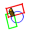

 Macro FCWire To Volume |
| Description |
|---|
| Crée un volume avec des objets Draft en une manipulation |
| Auteur |
| Mario52 |
| Liens |
| Recettes macros Comment installer une macro Comment ajouter une barre d'outils |
| Version |
| 1.0 |
| Date dernière modification |
| 2016-10-10 |
Cette macro crée une extrusion avec des objets Draft en une seule opération.
Sélectionnez vos objet qui serviront à la création de l'extrusion, donnez la hauteur de l'extrusion choisissez le type d'extrusion et validez avec le bouton Create
Copiez la macro dans votre répertoire de macros
L'icône pour votre barre d'outils
Macro_FCWire_To_Volume.FCMacro
# -*- coding: utf-8 -*-
from __future__ import unicode_literals
#
"""
***************************************************************************
* Copyright (c) 2016 <mario52> *
* *
* This file is a supplement to the FreeCAD CAx development system. *
* *
* This program is free software; you can redistribute it and/or modify *
* it under the terms of the GNU Lesser General Public License (LGPL) *
* as published by the Free Software Foundation; either version 2 of *
* the License, or (at your option) any later version. *
* for detail see the LICENCE text file. *
* *
* This software is distributed in the hope that it will be useful, *
* but WITHOUT ANY WARRANTY; without even the implied warranty of *
* MERCHANTABILITY or FITNESS FOR A PARTICULAR PURPOSE. See the *
* GNU Library General Public License for more details. *
* *
* You should have received a copy of the GNU Library General Public *
* License along with this macro; if not, write to the Free Software *
* Foundation, Inc., 59 Temple Place, Suite 330, Boston, MA 02111-1307 *
* USA *
***************************************************************************
* WARNING! All changes in this file will be lost and *
* may cause malfunction of the program *
***************************************************************************
"""
#Macro_FCWire_To_Volume 10/10/2016_01
#
#OS: Windows 10
#Word size of OS: 64-bit
#Word size of FreeCAD: 64-bit
#Version: 0.16.6706 (Git)
#Build type: Release
#Branch: releases/FreeCAD-0-16
#Hash: f86a4e411ff7848dea98d7242f43b7774bee8fa0
#Python version: 2.7.8
#Qt version: 4.8.7
#Coin version: 4.0.0a
#OCC version: 6.8.0.oce-0.17
#
__title__ = "Macro_FCWire_To_Volume"
__author__ = "Mario52"
__url__ = "http://www.freecadweb.org/index-fr.html"
__version__ = "00.01"
__date__ = "10/10/2016"
try:
import PyQt4
from PyQt4 import QtGui ,QtCore
from PyQt4.QtGui import *
from PyQt4.QtCore import *
except Exception:
import PySide
from PySide import QtGui ,QtCore
from PySide.QtGui import *
from PySide.QtCore import *
import Draft, Part, PartGui, FreeCADGui, FreeCAD
from FreeCAD import Base
import math
from math import sqrt, pi, sin, cos, asin
Gui = FreeCADGui
App = FreeCAD
try:
_fromUtf8 = QtCore.QString.fromUtf8
except AttributeError:
def _fromUtf8(s):
return s
try:
_encoding = QtGui.QApplication.UnicodeUTF8
def _translate(context, text, disambig):
return QtGui.QApplication.translate(context, text, disambig, _encoding)
except AttributeError:
def _translate(context, text, disambig):
return QtGui.QApplication.translate(context, text, disambig)
def errorDialog(msg):
diag = QtGui.QMessageBox(QtGui.QMessageBox.Critical,u"Error Message",msg )
# diag.setWindowModality(QtCore.Qt.ApplicationModal) # la fonction a ete desactivee pour favoriser "WindowStaysOnTopHint"
try:
diag.setWindowFlags(PyQt4.QtCore.Qt.WindowStaysOnTopHint) # PyQt4 # cette fonction met la fenetre en avant
except Exception:
diag.setWindowFlags(PySide.QtCore.Qt.WindowStaysOnTopHint) # PySide # cette fonction met la fenetre en avant
diag.exec_()
class Ui_MainWindow(object):
def __init__(self ):
self.window = MainWindow
#self.path = FreeCAD.ConfigGet("AppHomePath")
self.path = FreeCAD.ConfigGet("UserAppData")
self.path = self.path.replace("\\","/")
self.thicknessValue = 0.0
self.thicknessX = 0.0 # extrusion
self.thicknessY = 0.0 # extrusion
self.thicknessZ = 0.0 # extrusion
def setupUi(self, MainWindow):
self.window = MainWindow
MainWindow.setObjectName(_fromUtf8("MainWindow"))
MainWindow.resize(171, 180)
MainWindow.setMinimumSize(QtCore.QSize(171, 180))
MainWindow.setMaximumSize(QtCore.QSize(171, 180))
self.centralwidget = QtGui.QWidget(MainWindow)
self.centralwidget.setObjectName(_fromUtf8("centralwidget"))
self.fontGlobal_08 = QtGui.QFont() # pour compatibilite Windows Linux pour tous les textes
self.fontGlobal_08.setFamily("Arial") # pour compatibilite Windows Linux pour tous les textes
self.fontGlobal_08.setPointSize(8.0) # pour compatibilite Windows Linux pour tous les textes
self.label_01 = QtGui.QLabel(self.centralwidget)
self.label_01.setGeometry(QtCore.QRect(10, 0, 151, 16))
self.label_01.setFont(self.fontGlobal_08) # pour compatibilite W L
self.label_01.setObjectName(_fromUtf8("label_01"))
self.doubleSpinBox = QtGui.QDoubleSpinBox(self.centralwidget)
self.doubleSpinBox.setGeometry(QtCore.QRect(10, 20, 81, 22))
self.doubleSpinBox.setFont(self.fontGlobal_08) # pour compatibilite W L
self.doubleSpinBox.setObjectName(_fromUtf8("doubleSpinBox"))
self.doubleSpinBox.setMinimum(0)
self.doubleSpinBox.setMaximum(999999.999999)
self.doubleSpinBox.setDecimals(3)
self.doubleSpinBox.setValue(0.0)
self.doubleSpinBox.valueChanged.connect(self.on_doubleSpinBox) ###
self.checkBox_01 = QtGui.QCheckBox(self.centralwidget)
self.checkBox_01.setGeometry(QtCore.QRect(100, 23, 70, 17))
self.checkBox_01.setFont(self.fontGlobal_08) # pour compatibilite W L
self.checkBox_01.setObjectName(_fromUtf8("checkBox_01"))
self.checkBox_01.setChecked(False) # True
self.checkBox_01.setToolTip(_fromUtf8("Check this checkBox"+"\n"+
"for create single object"))
self.FrameOp = QtGui.QFrame(self.centralwidget)
self.FrameOp.setGeometry(QtCore.QRect(10, 50, 81, 80))
self.FrameOp.setFrameShape(QtGui.QFrame.StyledPanel)
self.FrameOp.setFrameShadow(QtGui.QFrame.Raised)
self.FrameOp.setObjectName(_fromUtf8("FrameOp"))
self.RB_Common = QtGui.QRadioButton(self.FrameOp)
self.RB_Common.setGeometry(QtCore.QRect(10, 0, 82, 17))
self.RB_Common.setFont(self.fontGlobal_08) # pour compatibilite W L
self.RB_Common.setChecked(True)
self.RB_Common.setObjectName(_fromUtf8("RB_Common"))
self.RB_Substract = QtGui.QRadioButton(self.FrameOp)
self.RB_Substract.setGeometry(QtCore.QRect(10, 20, 82, 17))
self.RB_Substract.setFont(self.fontGlobal_08) # pour compatibilite W L
self.RB_Substract.setObjectName(_fromUtf8("RB_Substract"))
self.RB_Union = QtGui.QRadioButton(self.FrameOp)
self.RB_Union.setGeometry(QtCore.QRect(10, 40, 82, 17))
self.RB_Union.setFont(self.fontGlobal_08) # pour compatibilite W L
self.RB_Union.setObjectName(_fromUtf8("RB_Union"))
self.RB_Difference = QtGui.QRadioButton(self.FrameOp)
self.RB_Difference.setGeometry(QtCore.QRect(10, 60, 82, 17))
self.RB_Difference.setFont(self.fontGlobal_08) # pour compatibilite W L
self.RB_Difference.setObjectName(_fromUtf8("RB_Difference"))
self.FrameAxis = QtGui.QFrame(self.centralwidget)
self.FrameAxis.setGeometry(QtCore.QRect(90, 50, 71, 80))
self.FrameAxis.setFrameShape(QtGui.QFrame.StyledPanel)
self.FrameAxis.setFrameShadow(QtGui.QFrame.Raised)
self.FrameAxis.setObjectName(_fromUtf8("FrameAxis"))
self.RB_Axis_X = QtGui.QRadioButton(self.FrameAxis)
self.RB_Axis_X.setGeometry(QtCore.QRect(10, 0, 71, 17))
self.RB_Axis_X.setFont(self.fontGlobal_08) # pour compatibilite W L
self.RB_Axis_X.setObjectName(_fromUtf8("RB_Axis_X"))
self.RB_Axis_X.setToolTip(_fromUtf8("Plane YZ extrude direction X"))
self.RB_Axis_Y = QtGui.QRadioButton(self.FrameAxis)
self.RB_Axis_Y.setGeometry(QtCore.QRect(10, 30, 71, 17))
self.RB_Axis_Y.setFont(self.fontGlobal_08) # pour compatibilite W L
self.RB_Axis_Y.setObjectName(_fromUtf8("RB_Axis_Y"))
self.RB_Axis_Y.setToolTip(_fromUtf8("Plane XZ extrude direction Y"))
self.RB_Axis_Z = QtGui.QRadioButton(self.FrameAxis)
self.RB_Axis_Z.setGeometry(QtCore.QRect(10, 60, 71, 17))
self.RB_Axis_Z.setFont(self.fontGlobal_08) # pour compatibilite W L
self.RB_Axis_Z.setObjectName(_fromUtf8("RB_Axis_Z"))
self.RB_Axis_Z.setChecked(True)
self.RB_Axis_Z.setToolTip(_fromUtf8("Plane XY extrude direction Z"))
self.PB_Quit = QtGui.QPushButton(self.centralwidget)
self.PB_Quit.setGeometry(QtCore.QRect(10, 140, 73, 23))
self.PB_Quit.setFont(self.fontGlobal_08) # pour compatibilite W L
self.PB_Quit.setObjectName(_fromUtf8("PB_Quit"))
self.PB_Quit.clicked.connect(self.on_PB_Quit) ###
self.PB_Create = QtGui.QPushButton(self.centralwidget)
self.PB_Create.setGeometry(QtCore.QRect(90, 140, 73, 23))
self.PB_Create.setFont(self.fontGlobal_08) # pour compatibilite W L
self.PB_Create.setObjectName(_fromUtf8("PB_Create"))
self.PB_Create.clicked.connect(self.on_PB_Create) ###
MainWindow.setCentralWidget(self.centralwidget)
self.retranslateUi(MainWindow)
QtCore.QMetaObject.connectSlotsByName(MainWindow)
def retranslateUi(self, MainWindow):
MainWindow.setWindowTitle("FCWire To Volume")
self.label_01.setText("FCWire To Volume")
self.checkBox_01.setText("Single")
self.RB_Common.setText("Common")
self.RB_Substract.setText("Substract")
self.RB_Union.setText("Union")
self.RB_Difference.setText("Difference")
self.RB_Axis_X.setText( "X Axis")
self.RB_Axis_Y.setText("Y Axis")
self.RB_Axis_Z.setText("Z Axis")
self.PB_Quit.setText("Quit")
self.PB_Create.setText("Create")
try:
MainWindow.setWindowFlags(PyQt4.QtCore.Qt.WindowStaysOnTopHint) # PyQt4 cette fonction met la fenetre en avant
except Exception:
MainWindow.setWindowFlags(PySide.QtCore.Qt.WindowStaysOnTopHint) # PySide cette fonction met la fenetre en avant
def on_doubleSpinBox(self,value):
self.thicknessValue = value
def on_PB_Quit(self): # Quit
App.Console.PrintMessage(str("Fin FCWire To Volume ")+"\n")
self.window.hide()
def on_PB_Create(self):
selectionObjects = FreeCADGui.Selection.getSelection()
noface = 0
try:
selectedEdge = FreeCADGui.Selection.getSelectionEx()[0].SubObjects[0] # select one element SubObjects
if str(selectedEdge)[1:5] == "Face":
noface = 1
except Exception:
None
selectionDuplicate = []
del selectionDuplicate[:]
p = []
del p[:]
try:
###########
self.thicknessX = 0.0
self.thicknessY = 0.0
self.thicknessZ = 0.0
if self.RB_Axis_X.isChecked():
self.thicknessX = self.thicknessValue
if self.RB_Axis_Y.isChecked():
self.thicknessY = self.thicknessValue
if self.RB_Axis_Z.isChecked():
self.thicknessZ = self.thicknessValue
###########
if (len(selectionObjects) >= 2) and (noface == 0) and (self.thicknessX + self.thicknessY + self.thicknessZ != 0.0):
for i in selectionObjects: # duplicate object
Part.show(i.Shape.copy())
sD = doc.ActiveObject
sD.Label = i.Name
selectionDuplicate.append(sD)
for i in (selectionDuplicate): # extrude object
a = Draft.extrude(i,Base.Vector(self.thicknessX,self.thicknessY,self.thicknessZ)) # axis extrude X Y Z
a.Solid = True
p.append(a)
if self.RB_Common.isChecked():
name = "Common_" + selectionDuplicate[0].Label ## create Common_
tx = doc.addObject("Part::MultiCommon",name)
tx.Shapes = p
doc.recompute()
if self.checkBox_01.isChecked():
Part.show(tx.Shape)
singleO = App.ActiveDocument.ActiveObject
singleO.Label = name
doc.removeObject(tx.Name)
for i in range(len(selectionDuplicate)):
doc.removeObject(selectionDuplicate[i].Name)
doc.removeObject(p[i].Name)
App.Console.PrintMessage("RB_Common ")
elif self.RB_Substract.isChecked():
name = str("Cut_" + selectionDuplicate[0].Label) ## create Cut_
tx = doc.addObject("Part::Cut",name)
tx.Base = p[0]
tx.Tool = p[1]
doc.recompute()
if self.checkBox_01.isChecked():
Part.show(tx.Shape)
singleO = App.ActiveDocument.ActiveObject
singleO.Label = name
doc.removeObject(tx.Name)
for i in range(len(selectionDuplicate)):
doc.removeObject(selectionDuplicate[i].Name)
doc.removeObject(p[i].Name)
App.Console.PrintMessage("RB_Substract ")
elif self.RB_Union.isChecked():
name = str("Fusion_" + selectionDuplicate[0].Label) ## create Fusion_
tx = doc.addObject("Part::MultiFuse",name)
tx.Shapes = p
doc.recompute()
if self.checkBox_01.isChecked():
Part.show(tx.Shape)
singleO = App.ActiveDocument.ActiveObject
singleO.Label = name
doc.removeObject(tx.Name)
for i in range(len(selectionDuplicate)):
doc.removeObject(selectionDuplicate[i].Name)
doc.removeObject(p[i].Name)
App.Console.PrintMessage("RB_Union")
elif self.RB_Difference.isChecked():
name = "CommonD_" + selectionDuplicate[0].Label ##
commun = doc.addObject("Part::MultiCommon",name)
commun.Shapes = p
name = str("FusionD_" + selectionDuplicate[0].Label) ##
fusion = doc.addObject("Part::MultiFuse",name)
fusion.Shapes = p
name = str("Difference_" + selectionDuplicate[0].Label)## create Difference_
difference = doc.addObject("Part::Cut",name)
difference.Base = fusion
difference.Tool = commun
doc.recompute()
if self.checkBox_01.isChecked():
Part.show(difference.Shape)
singleO = App.ActiveDocument.ActiveObject
singleO.Label = name
doc.removeObject(commun.Name)
doc.removeObject(fusion.Name)
doc.removeObject(difference.Name)
for i in range(len(selectionDuplicate)):
doc.removeObject(selectionDuplicate[i].Name)
doc.removeObject(p[i].Name)
App.Console.PrintMessage("RB_Difference ")
doc.recompute()
App.Console.PrintMessage(str(self.thicknessX)+" "+str(self.thicknessY)+" "+str(self.thicknessZ) + "\n")
else:
if (self.thicknessX + self.thicknessY + self.thicknessZ == 0.0):
App.Console.PrintError("Thickness = 0" + "\n")
else:
App.Console.PrintError("Not for Face" + "\n")
except Exception:
print "Wrong selection or operation"
#______________________________________________________________________________________
doc = FreeCAD.ActiveDocument
if doc == None:
doc = FreeCAD.newDocument()
MainWindow = QtGui.QMainWindow()
ui = Ui_MainWindow()
ui.setupUi(MainWindow)
MainWindow.show()
la discussion sur le forum Bunch of issues/questions
{kind=link}
{kind=link}
{kind=link}